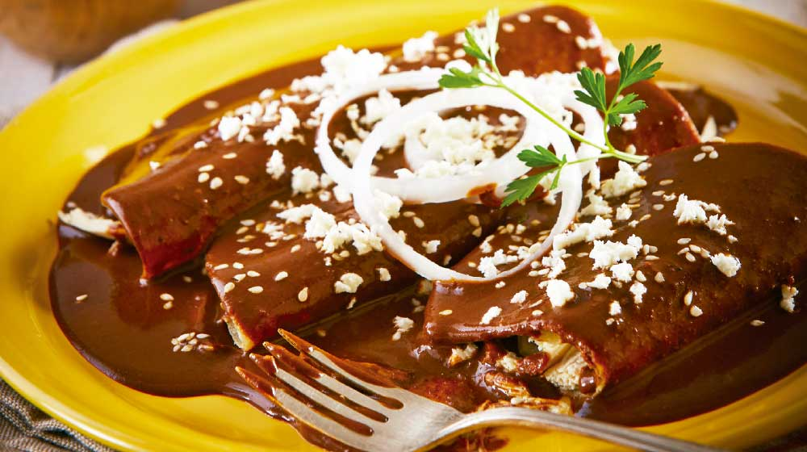
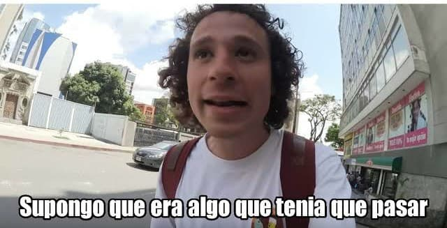

Mi nombre es Gabriel Rodríguez Sánchez, soy un chico común, tengo 16 años a día de hoy y suelo distraerme con facilidad, vivo en México y pss cómo voy a saber el lenguaje si todavía ni los veo jajaj.
este soy yo, si quieren pueden seguirme en mi facebook, ya que es la única red social que manejo por el momento link a facebook
por ejemplo este lugar que era un hueco en una colina donde decidí tomarme una de las pocas fotos que tengo

Decidí que era hora de ponerme a hacer algo productivo para que el camino me sea más fácil en un futuro, acaba de iniciar un nuevo año y espero que me vaya muy bien

este texto es el más importante entre el párrafo después siguen cosas no tan importantes la verdad.
pero aún así son bastante importantes a la hora de enfatizar o dar más relevancia a un fragmento de texto en el que nosotros podemos hacer muchísimas cosas divertidas
aqui si hago un cambio no se debría de ver reflejado en ningún lado hasta que haga un push